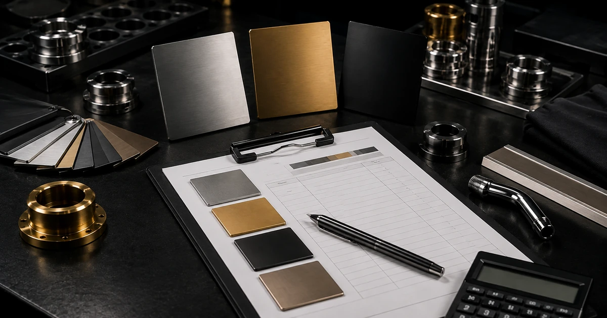

Brief اولیه، عکس قطعه، جنس، تعداد و فینیش هدف قبل از جابهجایی قطعه قابل بررسی است.
پوشش PVD در تهران
خدمات پوششدهی PVD برای پروژههای صنعتی، ساختمانی و لوکسکاری در تهران. مشاوره، استعلام قیمت و ثبت درخواست.
در تهران و کرج خدمات پوششدهی انجام میدهیم (هماهنگی ارسال/تحویل).

هماهنگی منطقهای
مسیر واقعی همکاری برای پروژههای تهران
صفحه محلی برای شفافکردن مسیر همکاری است، نه ایجاد ادعای شعبه یا خط مستقل در شهر.
تحویل یا ارسال قطعه پس از هماهنگی انجام میشود و مسیر اجرا به کارگاه اندیشه متصل است.
برای پروژههای حساس، نمونه یا مرجع رنگ و فینیش را قبل از تولید اصلی مشخص کنید.
چرا کاویان؟
- پاسخگویی سریع و مشاوره فنی
- کیفیت صنعتی + ظاهر لوکس
- پوششهای رایج: طلایی، رزگلد، دودی، نقرهای
سوالات پرتکرار درباره خدمات PVD در تهران
برای پروژههای ساختمانی و صنعتی، انتخاب پوشش مناسب روی دوام، رنگ و کیفیت نهایی اثر مستقیم دارد.
زمان انجام پوشش PVD در تهران چقدر است؟
بسته به نوع قطعه، میزان آمادهسازی سطح و تعداد سفارش، زمان انجام معمولاً از چند روز کاری تا حدود یک هفته متغیر است. برای زمان دقیق، عکس و مشخصات قطعه را ارسال کنید.
ارسال و تحویل سفارش داخل تهران چگونه انجام میشود؟
امکان هماهنگی برای ارسال با پیک/باربری و تحویل داخل تهران وجود دارد. همچنین میتوانید در ساعات کاری برای تحویل حضوری هماهنگ کنید.
چه رنگهایی برای کارهای لوکس در تهران محبوبتر است؟
رنگهای طلایی، رزگلد، دودی و مشکی مات/براق در پروژههای لوکس پرطرفدار هستند و با توجه به سبک طراحی و کاربرد انتخاب میشوند.
برای استعلام قیمت PVD چه اطلاعاتی لازم است؟
نوع قطعه و جنس (استیل/برنج/آلومینیوم)، تعداد، رنگ مدنظر، ابعاد، عکس از وضعیت سطح و محل مصرف (داخلی/خارجی) به برآورد دقیق قیمت و زمان کمک میکند.
قبل از جابهجایی قطعه
مسیر همکاری برای پروژههای تهران؛ از Brief تا تحویل در کارگاه اندیشه
کارگاه کاویان در اندیشه، استان تهران است. برای پروژههای شهر تهران، قبل از جابهجایی قطعه میتوانید عکس و مشخصات را بفرستید تا مسیر بررسی، نمونه احتمالی و نحوه ارسال/تحویل هماهنگ شود.
۱. بررسی از راه دور
عکس، جنس، تعداد، ابعاد و فینیش هدف را بفرستید تا نیاز به نمونه یا بازدید قطعه مشخص شود.
۲. هماهنگی ورود قطعه
ارسال با پیک/باربری یا تحویل حضوری فقط بعد از هماهنگی انجام شود تا زمان پذیرش و نوع بستهبندی مشخص باشد.
۳. مرجع قبل از تیراژ
برای پروژههای حساس به رنگ یا تکرارشونده، نمونه یا مرجع فیزیکی قبل از سریکاری ریسک اختلاف برداشت را کم میکند.
مناسب برای
پروژههای ساختمانی، یراق و شیرآلات، قطعات دکوراتیو و قطعات صنعتی تهران که نیاز به بررسی PVD، نیکلکروم یا پولیش دارند.
محل کارگاه
ارسال مشخصات قبل از ارسال قطعهاندیشه، استان تهران — آدرس کامل و نقشه در صفحه تماس
پوششدهی برای پروژههای تهران
این صفحه برای پوششدهی و آبکاری پروژههای شهر تهران و شهرستانهای اطراف تنظیم شده است. ثبت درخواست، ارسال/دریافت قطعه و هماهنگی نمونهگیری با تماس انجام میشود.
- پوششدهی در محدوده استان تهران با هماهنگی ارسال و دریافت
- پشتیبانی پروژههای ساختمانی، شیرآلات و یراقآلات تهران
- امکان هماهنگی نمونه و تست رنگ/فینیش قبل از تولید
اطلاعات تماس و هماهنگی: +98 912 546 0799 (واتساپ/تماس)
شفافیت تجاری
قیمت و زمان نهایی بعد از روشنشدن دامنه پروژه تأیید میشود
استعلام بر اساس قطعه واقعی، وضعیت سطح، تیراژ و مسیر فرایند همان پروژه جمعبندی میشود. برای بررسی فنی از Project Brief استفاده کنید و اگر عکس یا مرجع فینیش سریعتر مسئله را روشن میکند، آن را در واتساپ بفرستید.
01بررسی فنی
جنس، وضعیت فعلی سطح، ابعاد، تیراژ و فینیش هدف مبنای بررسی اولیهاند.
02مرجع بصری
در صورت نیاز، عکس واضح قطعه یا نمونه فینیش را از طریق واتساپ ارسال کنید.
03ساعات کارگاه
شنبه تا چهارشنبه ۷–۱۷ · پنجشنبه ۷–۱۳.